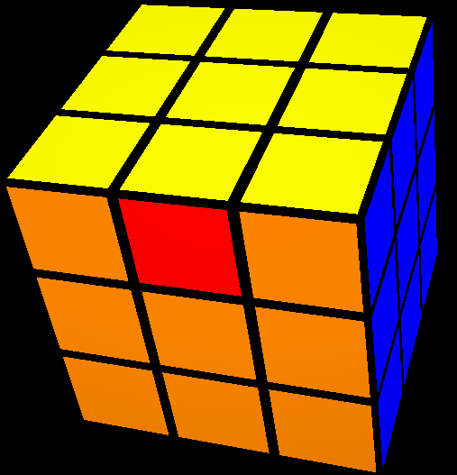
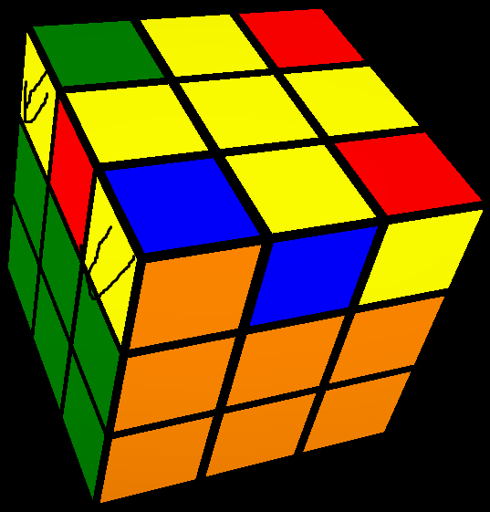
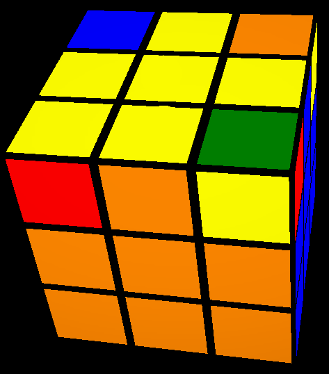
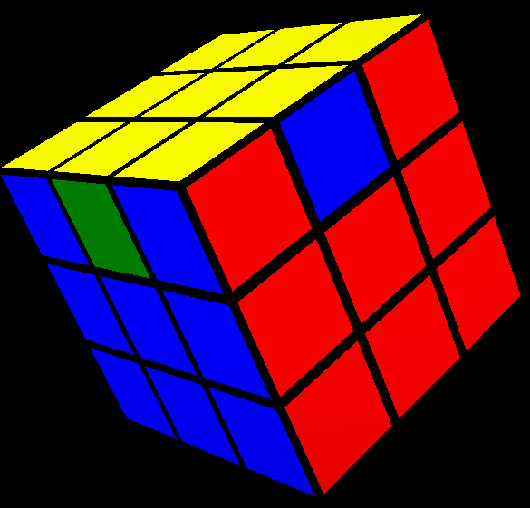
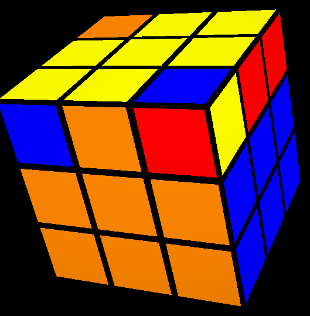
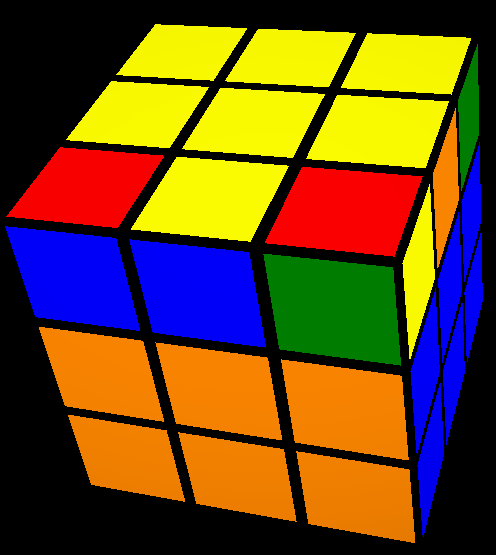

حل الوجه الاصفر كامل

_-_-_-_-_-_-_-_-_
لو كان الوجه الاصفر به زائد فقط ندور علي نقطتين بهم اصفر بيبص لبعض ونحطهم علي اليسار

نعمل R U R' U R U U R'

لو متحلش نعمل مرة تانية

_-_-_-_-_-_-_-_-_
لو طلعلك هذا الشكل نعمل نختار احد الفورغ التي لاتحتوي علي اصفر ونحطهو تحت علي اليمين

نعمل R U R' U R U U R'

_-_-_-_-_-_-_-_-_
لو طلعلك هذا الشكل نحط النقطة الزيادة تحت
نعمل R U R' U R U U R'
_-_-_-_-_-_-_-_-_
وكدة نكون شرحنا كيفية عمل زائد اصفر
فديو توضيحي عن الذي شرح
التالي
السابق